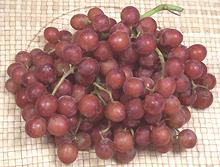

SAFARI
Users
- General & History
- Varieties - including Raisins, Currants and Leaves
General & History
Cultivation of grapes probably began around 8000 years ago in Anatolia and Caucasus. The oldest known production winery found in Armenia, is about 6000 years old, but too sophisticated to be something new. Wine production had spread all through the Mediterranean region and as far as India by historical times. The city of Shiraz, in Persia, was a major wine production region until the 19th century, but as Radical Islam replaced Civilized Islam through the Near and Middle East, production ceased. Australian Shiraz wine is not related.
Today, due to modern transportation fresh table grapes can be enjoyed far and wide, all year long. When they're out of season in California, they are brought in from Chile.
The two major species are V. vinifera, native to Europe, and V. labrusca, native to North America. Other species are of local interest only, except V. californica which is used worldwide as a robust root stock for wine grapes.
Varieties
The varieties shown here are just a few of the hundreds grown world-wide, but are those easily available in Southern California. With the exception of the Concord variety, grown in more northerly climates, California is by far the largest producer of grapes in North America. The many California and European wine grape varieties are not listed here because they are not generally available in markets.
Black Finger Grape
[Vitis vinifera]
I first found these grapes in a large Asian market in Los Angeles
(San Gabriel). They are seedless, moderately sweet, moderately tart,
and fairly firm. They were typically 1.65 inches long by 0.64 inch
diameter, weighing 1/4 ounce each, sold for 2019 US $1.69 / pound.
Black Seedless Grape
[#4056; Vitis vinifera]
These large, dark purple, lightly sweet, lightly flavored seedless grapes are
not nearly as common here in Southern California as the red and white seedless
varieties. The most common, Black Beauty, has a short season so even though
grown in both California and Chile, they are not available all year. The
photo specimens were purchased in Los Angeles in June, and came from Chile.
They are typically up to 1 inch diameter by 1.4 inches long.
Champaign White / Champaign Red Grapes
[Vitis vinifera]
These are not actually the grapes used to make Champaign wine, they are
called "Champaign" because their small size reminded someone of the bubbles
in Champaign. They are a common seedless table grape here in Southern
California - but they seem to be getting bigger lately as growers select
for size, as they do with everything else around here. The photo specimens
were about 0.50 inch diameter for the white, 0.63 diamater for the red.
Concord Grape
[ (fox grapes)]
The Concord Grape variety was developed in 1849 and is the dominant native North American grape in commerce. While primarily a North American grape it is suspected of having some Vitis vinifera (European) content in its genetic makeup. It is large, very deeply purple with a dusty white blush on the outside and is a seeded type. It is adapted to cooler weather and is grown extensively from New England to the Pacific Northwest.
Concords are rarely sold as table grapes because seedless varieties
are preferred for that use, but they are much used for grape jelly, grape
juice and to make sweet kosher wine. It's deep purple color has become
signatory of these products. Concords are slip-skin grapes, meaning they
are easy to squeeze out of their skins.
Photo by unknown contributed to the public domain.
Flame Red Grape
 [#4023; Vitis vinifera]
This is a very common, medium sweet, seedless red table grape grown in
California in great quantity. It is valued for heavy yield and fruit which
is durable in storage and transportation. It is a hybrid of Thompson
Seedless and several other V. vinifera species (yes, grape developers
have some tricky ways to hybridize with seedless grapes). The photo
specimens were abut 0.8 inch diameter. Their season is May to December,
alternating with similar Ruby types in season from August to February.
Kyoho Grape
 [Kyoho budo; Vitis vinifera x Vitis labrusca]
[Kyoho budo; Vitis vinifera x Vitis labrusca]
This grape has been grown in Japan since 1937 but got its current name,
meaning "giant mountain grapes" only in 1946. They are very sweet with
intense grape flavor, and are just mildly tart, with large seeds. Like
the Concord, they are a slip-skin grape, and in Asia they are normally
eaten without the skin. Being a Western barbarian, I eat them skin and
all. They are popular in Japan, Korea and parts of China, but are also
grown in California and Chile. The photo specimens were purchased at a
farmer's market in Los Angeles and were about 0.93 inch diameter.
Pearlette Grape
[#4022; Vitis vinifera]
This is a popular white seedless table grape. It's in season from May through
July, after which the Thompson Seedless takes over. This grape is mildly tart
with good flavor. The photo specimens were about 0.81 inch diameter. They are
easy to tell from the Thompson because they are nearly spherical, while the
Thompson is elongated.
Red Globe Grape
[#4636; Vitis vinifera]
This large seeded table grape is in color between red and green, and also
has a rather light flavor. It is common in Southern California produce markets,
but most production from California and Australia is exported to Japan, where
it is very popular. Requiring a long growing season it is not a practical
variety in most regions. The photo specimens were 0.93 inch
diameter.
Sour Grapes
[Vitis vinifera]
Before vinegar production was perfected, verjuice, squeezed from unripe
grapes, was a major souring ingredient in Europe. It is essential for
accurately reconstructing Medieval and Renaissance recipes. It is now a
"gourmet" item in Australia, and still much used in Anatolia, Caucasus, and
the Near and Middle East. Due to our large communities from those regions
here in Southern California, unripe grapes are widely available in produce
markets when in season (June, July). The two bunches in the photo show
the extremes of size (0.28 to 0.65 inch diameter) - they may be anywhere
in between. Details and Cooking.
Sugraone / Autumn Seedless
[#4497; Vitis vinifera]
This grape is significantly more tart than most popular seedless grapes.
The photo specimens were about 0.85 inch diameter. Purchased in Southern
California in late June, 2013.
Thompson Seedless Grape
[Sultana; #4022; Vitis vinifera]
These very popular mildly sweet white seedless table grape originated in Anatolia and were originally imported from the Ottoman Empire. Thompsons are the most heavily planted grapes in California because they can be used three ways: raisins, table grapes and wine grapes.
Nearly all raisins sold in North America come from California, and
nearly all are made from Thompson Seedless grapes. For details see
Raisins. California Chablis wine is made primarily
from this grape, thus is a "California varietal" and not a real Chablis,
which can only be made in a specific region of France and from Chardonnay
grapes. The photo specimens were abut 0.68 inch diameter and 0.90
inches long.
Raisins
[Sultanas; Vitis vinifera]
Raisins are simply dried grapes. They come in two forms, Golden and Dark.
Both forms are made from the same white grapes, generally Thompson
Seedless. Naturally dried raisins are dark. The Golden ones are made by
use of Sulphur Dioxide, or by an accelerated drying process. Nearly all
raisins sold in North America are grown, dried and packaged in
California, made from Thompson Seedless grapes.
Zante Currants
 [Vitis vinifera]
[Vitis vinifera]
Often called simply "currants", and specified in recipes as such, these
are not related to the botanical Currants, which are
Saxifrages, not grapes, and not
commercially available in North America. These are simply tiny Black
Corinth grapes (an ancient Greek variety) dried into raisins. Nearly
all sold in North America are grown, dried and packaged in California.
Grape Leaves
[Vitis vinifera]
Grape leaves are used as mildly tart food wrappers in the cuisines of Turkey, Armenia, Greece, Bulgaria, Rumania, Vietnam and the Arab region. Produce markets here in Southern California often have them fresh, but they are also widely available brined and packed in jars.
Fresh leaves are rolled up around a cylinder of stuffing, often seasoned
rice, meat, or a combination of the two, and steamed.The photo specimens,
purchased from a multi-ethnic market in Los Angeles in June, were about
6-1/2 inches wide.
Grape Seed Oil
[Vitis vinifera]
Grapeseed oil is now commonly available, at least here in California.
Its nutral taste makes it very suitable for salad dressings and similar
uses. It is also a very high temperature oil with a smoke point of
480°F/250°C. Unfortunately it is also very high in
polyunsaturated fats (mostly linoleic acid), but the rancidity problem
is somewhat relieved by a high content of protective vitamin E and other
antioxidants. It should not be a problem when used for relatively short
duration frying jobs without re-use. For details see our
Oil Composition & Smoke Point page and
our Oils, Fats & Health page.
Verjuice
 Not vinegar, but used in a similar way, verjuice is the juice of unripe
grapes. It is essential for reconstructing Medieval and Renaissance recipes
from before vinegar production was reliable. It used to be almost
impossible to find in the U.S. but is now being turned out by California
wineries.
Not vinegar, but used in a similar way, verjuice is the juice of unripe
grapes. It is essential for reconstructing Medieval and Renaissance recipes
from before vinegar production was reliable. It used to be almost
impossible to find in the U.S. but is now being turned out by California
wineries.
The photo specimen was made by me from unripe grapes purchased from a
multi-ethnic market serving Anatolian, Caucasian and Near and Middle Eastern
communities. The grapes were simply ground up in a food processor, strained
and frozen for future use. It is very sour and somewhat fruity.
Details and Cooking.